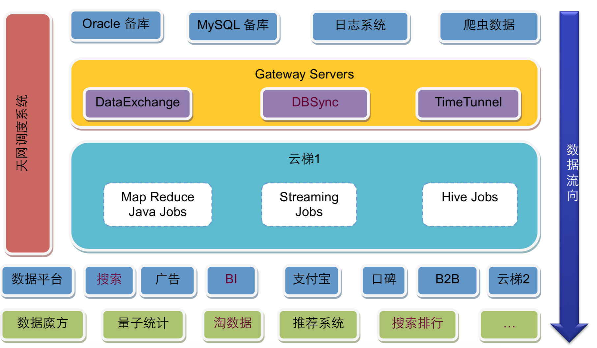
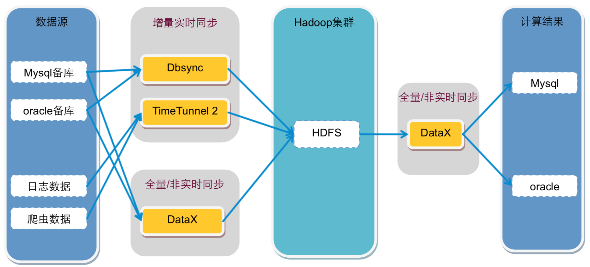
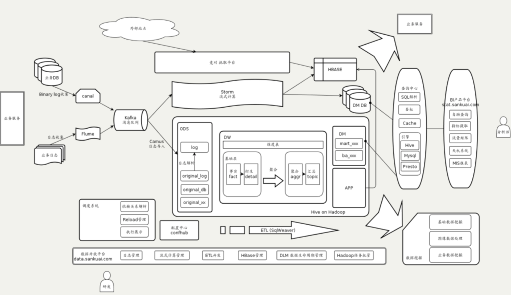
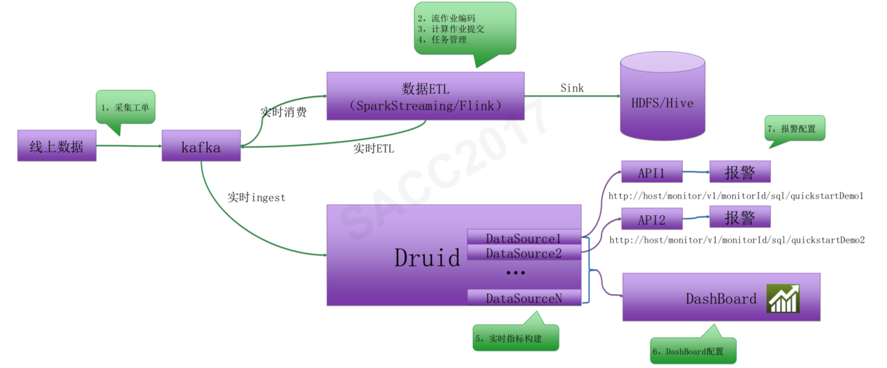
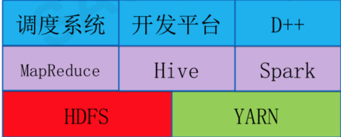
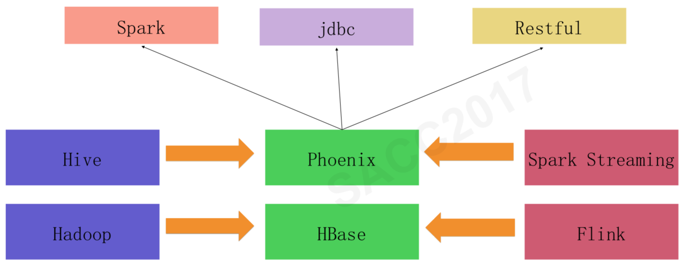
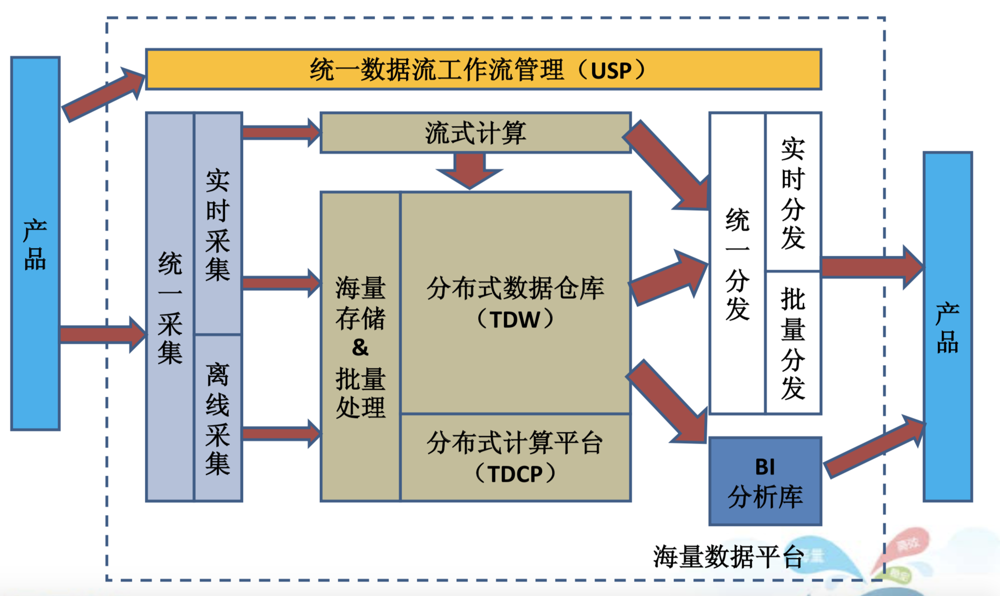

- 00 开篇词 为什么说每个软件工程师都应该懂大数据技术？.md.html
- 01 大数据技术发展史：大数据的前世今生.md.html
- 02 大数据应用发展史：从搜索引擎到人工智能.md.html
- 03 大数据应用领域：数据驱动一切.md.html
- 04 移动计算比移动数据更划算.md.html
- 05 从RAID看垂直伸缩到水平伸缩的演化.md.html
- 06 新技术层出不穷，HDFS依然是存储的王者.md.html
- 07 为什么说MapReduce既是编程模型又是计算框架？.md.html
- 08 MapReduce如何让数据完成一次旅行？.md.html
- 09 为什么我们管Yarn叫作资源调度框架？.md.html
- 10 模块答疑：我们能从Hadoop学到什么？.md.html
- 11 Hive是如何让MapReduce实现SQL操作的？.md.html
- 12 我们并没有觉得MapReduce速度慢，直到Spark出现.md.html
- 13 同样的本质，为何Spark可以更高效？.md.html
- 14 BigTable的开源实现：HBase.md.html
- 15 流式计算的代表：Storm、Flink、Spark Streaming.md.html
- 16 ZooKeeper是如何保证数据一致性的？.md.html
- 17 模块答疑：这么多技术，到底都能用在什么场景里？.md.html
- 18 如何自己开发一个大数据SQL引擎？.md.html
- 19 Spark的性能优化案例分析（上）.md.html
- 20 Spark的性能优化案例分析（下）.md.html
- 21 从阿里内部产品看海量数据处理系统的设计（上）：Doris的立项.md.html
- 22 从阿里内部产品看海量数据处理系统的设计（下）：架构与创新.md.html
- 23 大数据基准测试可以带来什么好处？.md.html
- 24 从大数据性能测试工具Dew看如何快速开发大数据系统.md.html
- 25 模块答疑：我能从大厂的大数据开发实践中学到什么？.md.html
- 26 互联网产品 + 大数据产品 = 大数据平台.md.html
- 27 大数据从哪里来？.md.html
- 28 知名大厂如何搭建大数据平台？.md.html
- 29 盘点可供中小企业参考的商业大数据平台.md.html
- 30 当大数据遇上物联网.md.html
- 31 模块答疑：为什么大数据平台至关重要？.md.html
- 32 互联网运营数据指标与可视化监控.md.html
- 33 一个电商网站订单下降的数据分析案例.md.html
- 34 A_B测试与灰度发布必知必会.md.html
- 35 如何利用大数据成为“增长黑客”？.md.html
- 36 模块答疑：为什么说数据驱动运营？.md.html
- 37 如何对数据进行分类和预测？.md.html
- 38 如何发掘数据之间的关系？.md.html
- 39 如何预测用户的喜好？.md.html
- 40 机器学习的数学原理是什么？.md.html
- 41 从感知机到神经网络算法.md.html
- 42 模块答疑：软件工程师如何进入人工智能领域？.md.html
- 所有的不确定都是机会——智慧写给你的新年寄语.md.html
- 第2季回归丨大数据之后，让我们回归后端.md.html
- 结束语 未来的你，有无限可能.md.html
- 捐赠
28 知名大厂如何搭建大数据平台？
专栏第26期，我介绍了一个常规的大数据平台架构方案，这种架构方案是基于大数据平台Lamda架构进行设计的。事实上，业界也基本是按照这种架构模型搭建自己的大数据平台。
今天我们来看一下淘宝、美团和滴滴的大数据平台，一方面进一步学习大厂大数据平台的架构，另一方面也学习大厂的工程师如何画架构图。通过大厂的这些架构图，你就会发现，不但这些知名大厂的大数据平台设计方案大同小异，架构图的画法也有套路可以寻觅。
淘宝大数据平台
淘宝可能是中国互联网业界较早搭建了自己大数据平台的公司，下图是淘宝早期的Hadoop大数据平台，比较典型。

淘宝的大数据平台基本也是分成三个部分，上面是数据源与数据同步；中间是云梯1，也就是淘宝的Hadoop大数据集群；下面是大数据的应用，使用大数据集群的计算结果。
数据源主要来自Oracle和MySQL的备库，以及日志系统和爬虫系统，这些数据通过数据同步网关服务器导入到Hadoop集群中。其中DataExchange非实时全量同步数据库数据，DBSync实时同步数据库增量数据，TimeTunnel实时同步日志和爬虫数据。数据全部写入到HDFS中。

在Hadoop中的计算任务会通过天网调度系统，根据集群资源和作业优先级，调度作业的提交和执行。计算结果写入到HDFS，再经过DataExchange同步到MySQL和Oracle数据库。处于平台下方的数据魔方、推荐系统等从数据库中读取数据，就可以实时响应用户的操作请求。
淘宝大数据平台的核心是位于架构图左侧的天网调度系统，提交到Hadoop集群上的任务需要按序按优先级调度执行，Hadoop集群上已经定义好的任务也需要调度执行，何时从数据库、日志、爬虫系统导入数据也需要调度执行，何时将Hadoop执行结果导出到应用系统的数据库，也需要调度执行。可以说，整个大数据平台都是在天网调度系统的统一规划和安排下进行运作的。
DBSync、TimeTunnel、DataExchange这些数据同步组件也是淘宝内部开发的，可以针对不同的数据源和同步需求进行数据导入导出。这些组件淘宝大都已经开源，我们可以参考使用。
美团大数据平台
美团大数据平台的数据源来自MySQL数据库和日志，数据库通过Canal获得MySQL的binlog，输出给消息队列Kafka，日志通过Flume也输出到Kafka。

Kafka的数据会被流式计算和批处理计算两个引擎分别消费。流处理使用Storm进行计算，结果输出到HBase或者数据库。批处理计算使用Hive进行分析计算，结果输出到查询系统和BI（商业智能）平台。
数据分析师可以通过BI产品平台进行交互式的数据查询访问，也可以通过可视化的报表工具查看已经处理好的常用分析指标。公司高管也是通过这个平台上的天机系统查看公司主要业务指标和报表。
美团大数据平台的整个过程管理通过调度平台进行管理。公司内部开发者使用数据开发平台访问大数据平台，进行ETL（数据提取、转换、装载）开发，提交任务作业并进行数据管理。
滴滴大数据平台
滴滴大数据平台分为实时计算平台（流式计算平台）和离线计算平台（批处理计算平台）两个部分。
实时计算平台架构如下。数据采集以后输出到Kafka消息队列，消费通道有两个，一个是数据ETL，使用Spark Streaming或者Flink将数据进行清洗、转换、处理后记录到HDFS中，供后续批处理计算。另一个通道是Druid，计算实时监控指标，将结果输出到报警系统和实时图表系统DashBoard。

离线计算平台架构如下。滴滴的离线大数据平台是基于Hadoo 2（HDFS、Yarn、MapReduce）和Spark以及Hive构建，在此基础上开发了自己的调度系统和开发系统。调度系统和前面其他系统一样，调度大数据作业的优先级和执行顺序。开发平台是一个可视化的SQL编辑器，可以方便地查询表结构、开发SQL，并发布到大数据集群上。

此外，滴滴还对HBase重度使用，并对相关产品（HBase、Phoenix）做了一些自定义的开发，维护着一个和实时、离线两个大数据平台同级别的HBase平台，它的架构图如下。

来自于实时计算平台和离线计算平台的计算结果被保存到HBase中，然后应用程序通过Phoenix访问HBase。而Phoenix是一个构建在HBase上的SQL引擎，可以通过SQL方式访问HBase上的数据。
小结
你可以看到，这些知名大厂的大数据平台真的是大同小异，他们根据各自场景和技术栈的不同，虽然在大数据产品选型和架构细节上略有调整，但整体思路基本上都是一样的。
不过也正是这种大同小异，让我们从各个角度更加了解大数据平台架构，对大数据平台架构有了更加深刻的认知。
我在阿里巴巴工作期间，有一阵子不断参加各种基础技术产品的架构评审会。有一次，另一个和我一样经常参加这类会议的架构师说：“我感觉这些产品的架构怎么都一样”。被他一说，大家都纷纷点头称是，好像确实如此。
同一类问题的解决方案通常也是相似的。一个解决方案可以解决重复出现的同类问题，这种解决方案就叫作模式。模式几乎是无处不在的，一旦一个解决方案被证明是行之有效的，就会被重复尝试解决同类的问题。
所以我们看到，很多大数据产品的架构也都是差不多的，比如Hadoop 1、Yarn、Spark、Flink、Storm，这些产品的部署架构真的是太像了。
对于有志于成为架构师的工程师来说，一方面当然是提高自己的编程水平，另一方面也可以多看看各种架构设计文档，多去参加一些架构师技术大会。在我看来，编程需要天分；而架构设计，真的是孰能生巧。
思考题
下图是腾讯的大数据平台架构，请你尝试对这个架构图的主要组件和运行机制进行分析。

欢迎你点击“请朋友读”，把今天的文章分享给好友。也欢迎你写下自己的思考或疑问，与我和其他同学一起讨论。
© 2019 - 2023 Liangliang Lee. Powered by gin and hexo-theme-book.